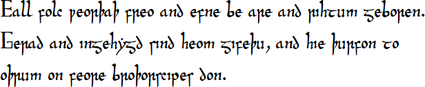

Test Dataset: UDHR Translations without SubCollections (Manual Approval)
‚¨áÔ∏èüè∑Ô∏è Download all the metadata for Test Dataset: UDHR Translations without SubCollections (Manual Approval) in JSON-LD formatTest Dataset: UDHR Translations without SubCollections (Manual Approval)
{kind=link}
{kind=link}
Omniglot
| @id | #Omniglot |
|---|---|
| name [?] | Omniglot |
| @type | Organization |
| Items that reference this one | |
| author [?] | Test Dataset: UDHR Translations without SubCollections (Manual Approval) |
Go to: University of Queensland
| @id | https://ror.org/00rqy9422 |
|---|---|
| name [?] | University of Queensland |
| @type | Organization |
| Items that reference this one | |
| publisher [?] | Test Dataset: UDHR Translations without SubCollections (Manual Approval) |
Go to: Example Custom License
| @id | https://language-research-technology.github.io/qa/licenses/udhr/manual/v1/ |
|---|---|
| name [?] | Example Custom License |
| @type | ldac:DataReuseLicense |
| description [?] | This license explains who is allowed to use and possibly redistribute this data, and for what purpose. |
| isPartOf [?] | Test Dataset: UDHR Translations without SubCollections (Manual Approval) |
| ldac:allowTextIndex [?] | true |
| Items that reference this one | |
| license [?] | |
⬇️ Download: Licenses/Example.txt
| @id | Licenses/Example.txt |
|---|---|
| @type | File |
| Items that reference this one | |
| hasPart [?] | Test Dataset: UDHR Translations without SubCollections (Manual Approval) |
⬇️ Download: Images/UDHR_OldEnglish.png
{kind=link}
⬇️ Download: Images/UDHR_AncientEgyptian.png

⬇️ Download: Audio/UDHR_German.mp3
⬇️ Download: Audio/UDHR_Danish.mp3
⬇️ Download: Audio/UDHR_Finnish.mp3
⬇️ Download: Audio/UDHR_Latin.mp3
⬇️ Download: Audio/UDHR_Icelandic.mp3
⬇️ Download: Audio/UDHR_ScottishGaelic.mp3
⬇️ Download: Audio/UDHR_Lithuanian.mp3
⬇️ Download: Audio/UDHR_Mongolian.mp3
⬇️ Download: Audio/UDHR_Welsh.mp3
⬇️ Download: Text/UDHR_ScottishGaelic.txt
⬇️ Download: Text/UDHR_OldEnglish.txt
⬇️ Download: Text/UDHR_Lithuanian.txt
⬇️ Download: Text/UDHR_Icelandic.txt
⬇️ Download: Text/UDHR_English.txt
⬇️ Download: Text/UDHR_German.txt
⬇️ Download: Text/UDHR_Finnish.txt
⬇️ Download: Text/UDHR_Mongolian.txt
⬇️ Download: Text/UDHR_Latin.txt
⬇️ Download: Text/UDHR_Danish.txt
⬇️ Download: Text/UDHR_Welsh.txt
⬇️ Download: ro-crate-metadata-wo-subcollections.xlsx
| @id | ro-crate-metadata-wo-subcollections.xlsx |
|---|---|
| @type | File |
| Items that reference this one | |
| hasPart [?] | Test Dataset: UDHR Translations without SubCollections (Manual Approval) |
Images
| @id | #Images |
|---|---|
| name [?] | Images |
| @type | RepositoryObject |
| description [?] | Article 1 UDHR Images. |
| datePublished [?] | 2025-05-28 |
| conformsTo [?] | https://w3id.org/ldac/profile#Object |
| pcdm:memberOf [?] | Test Dataset: UDHR Translations without SubCollections (Manual Approval) |
| license [?] | Example Custom License |
| hasPart [?] | |
| Items that reference this one | |
| pcdm:hasMember [?] | Test Dataset: UDHR Translations without SubCollections (Manual Approval) |
| isPartOf [?] | |
Audio
| @id | #Audio |
|---|---|
| name [?] | Audio |
| @type | RepositoryObject |
| description [?] | Article 1 UDHR Audio. |
| datePublished [?] | 2025-05-28 |
| conformsTo [?] | https://w3id.org/ldac/profile#Object |
| pcdm:memberOf [?] | Test Dataset: UDHR Translations without SubCollections (Manual Approval) |
| license [?] | Example Custom License |
| hasPart [?] | |
| Items that reference this one | |
| pcdm:hasMember [?] | Test Dataset: UDHR Translations without SubCollections (Manual Approval) |
| isPartOf [?] | |
Text
| @id | #Text |
|---|---|
| name [?] | Text |
| @type | RepositoryObject |
| description [?] | Article 1 UDHR Text. |
| datePublished [?] | 2025-05-28 |
| conformsTo [?] | https://w3id.org/ldac/profile#Object |
| pcdm:memberOf [?] | Test Dataset: UDHR Translations without SubCollections (Manual Approval) |
| license [?] | Example Custom License |
| hasPart [?] | |
| Items that reference this one | |
| pcdm:hasMember [?] | Test Dataset: UDHR Translations without SubCollections (Manual Approval) |
| isPartOf [?] | |